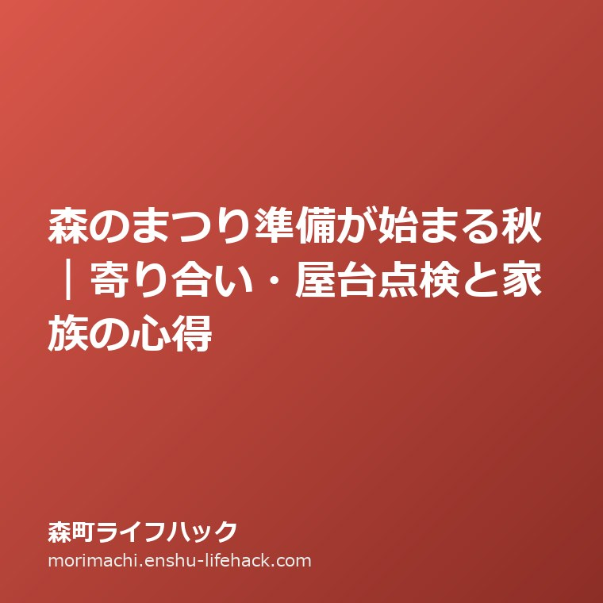
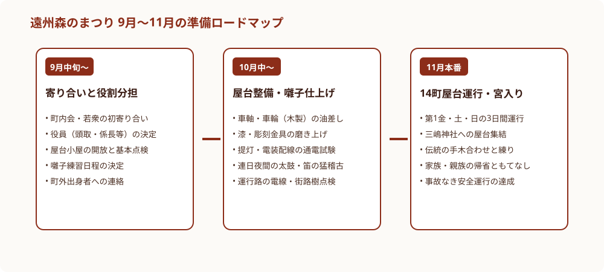
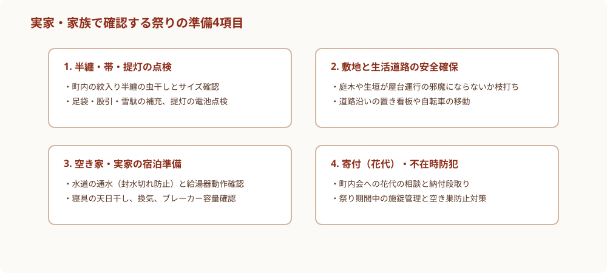

森のまつり準備が始まる秋｜寄り合い・屋台点検と家族の心得
／ 伝統行事・地域コミュニティ

Q. 遠州森のまつりの準備はいつから始まりますか？家族や空き家実家で準備すべきことは？
遠州森のまつりは、11月の本番に向けて9月中旬の寄り合いから準備が始まります。14台の二輪屋台点検や若衆の役員決め、お囃子練習が進む中、家族は半纏や提灯の手入れ、実家生活道路の枝打ち、宿泊用設備の通水確認を進めます。少子高齢化が進む中、町外出身者の参加や空き家活用を通じた柔軟な継承が求められています。
秋風とともに始まる、遠州森のまつりの胎動
静岡県周智郡森町に秋の気配が漂い始めると、町内の空気がどこか凛と引き締まり、人々の表情に独特の熱気が宿り始めます。毎年11月の第1金曜日・土曜日・日曜日の3日間にわたって開催される「遠州森のまつり」は、三嶋神社の秋季祭礼として名高い、町最大の伝統行事です。国の選択無形民俗文化財にも指定されている独特の祭り囃子と、精緻な彫刻が施された14台の漆塗り二輪屋台が街道を練り歩く光景は、遠州地方の秋を彩る至宝と言えます。
カレンダーの上では11月が本番ですが、祭りの実質的な幕開けは、まさにこの9月中旬から下旬にかけての時期です。町内各地の公会堂や屋台小屋では夜になると明かりが灯り、今年度の運行を担う若衆や町内役員が集まって「初寄り合い」が開かれます。太鼓の皮の張り具合や笛の音色を確かめる音が、静かな夜の森町に心地よく響き渡り始めるのがこの季節の風物詩です。
私は大石浩之（磐田市／不動産業）です。不動産や空き家管理、そして高齢者介護の仕事を通じて、森町の人々と深く関わってきました。祭りというものは、単なる観光イベントではありません。その土地に暮らす人々の地縁を強固に結びつけ、遠方に離れた家族を故郷へと呼び戻す、地域社会の心臓部のような機能を果たしています。
前回の記事森町の土砂災害警戒区域と秋の避難先確認では大雨から命を守る防災の備えを整理しましたが、今回は秋の深まりとともに地域全体で受け継がれる伝統行事の準備と、家族や実家が果たすべき大切な心得について、現場の実感から整理します。
過疎化や少子高齢化が進む中山間地域において、いかにして重層的な伝統を次の世代へ引き継いでいくのか。その舞台裏にある若衆の奮闘や町内会の工夫を知ることは、森町の住まいと地域の未来を考える上で極めて重要な示唆を与えてくれます。
事実整理｜14町の社と9月から本番までの準備ロードマップ
遠州森のまつりを深く理解するためには、森地区を中心とする14の町内（それぞれの屋台を保有する組織を「社」と呼びます）が、どのような組織体制で運行を支えているかという基本構造を知る必要があります。
森町市街地には、藤雲社、明開社、凱生社、睦栄社、鳳雲社、桑水社、水ButtonClick、慶雲社、湧水社、沿海社、龍生社、比雲社、福田社、天拝社という伝統ある14の社が存在し、各町内が誇りとする独自の二輪屋台と紋章を持っています。これらの屋台は、四輪の山車とは異なり、左右の大きな木製車輪2本だけで車体を支える構造になっており、狭い街道を旋回させたり手木を激しく上下させたりする運行には、高度な技術と若衆の強靭な体力、そして緊密な連携が要求されます。
この壮麗な屋台運行を無事故で成し遂げるため、9月中旬から11月の本番までには綿密な準備工程が存在します。
まず「9月中旬〜下旬」は、役員決めと基本方針の策定です。各社において、運行の総責任者である「頭取」や、囃子係、警備係、接待係などの役割分担が決定されます。同時に、一年間締め切られていた屋台小屋の扉が開け放たれ、埃を払い、車輪の木部の乾燥度合いやブレーキ（制動装置）の作動状態を確認する初期点検が行われます。
次に「10月上旬〜下旬」は、お囃子の猛稽古と屋台の本格整備です。夜間になると各社の公会堂に小学生から若衆までが集まり、「森の石松」でも知られる独特の調子を持つ祭り囃子（大間、屋台下など）の練習が連日繰り広げられます。また、屋台の彫刻金具を磨き上げ、提灯の配線をチェックし、漆塗りの車体にワックスをかけて万全の輝きを取り戻させます。さらに、屋台が通る運行ルートの電線や街路樹の枝が引っかからないか、道路管理者や電力会社とも調整が行われます。
そして「11月初旬の本番」を迎えます。3日間にわたって町中を屋台が練り歩き、三嶋神社への宮入りや、各町内の手木を激しく突き合わせる「手木合わせ（練り）」が行われ、祭りの熱気は最高潮に達します。
この数ヶ月に及ぶ入念な仕込みがあるからこそ、本番のわずか3日間で爆発的な感動と安全な運行が担保されているのです。

祭り組織の役割分担｜若衆・自治会・社寺総代の三位一体
遠州森のまつりの運行が他の多くのイベントと根本的に異なるのは、行政主導の観光イベントではなく、住民自らが組織する完全な自治運営である点です。
その屋台骨を支えているのが、「若衆組織（青年大会・若者連）」「町内会・自治会」「社寺総代」の三位一体の連携体制です。
祭りの現場で実際に屋台を操り、汗を流して先頭に立つのは「若衆」と呼ばれる10代後半から30代半ばまでの若者たちです。彼らは上下関係の規律を重んじながら、重さ数トンにも及ぶ二輪屋台を巧みな舵取りで制御します。運行中の安全確保、後輩への技術指導、長時間の運行に耐えうる体力づくりなど、若衆一人ひとりが担う責任は極めて重いものがあります。
その若衆の活動を後方からどっしりと支えるのが、「自治会・町内会の役員や中老・年長者」です。祭りの運営には、道路使用許可の申請、警察や消防との協議、町内住民からの寄付金（花代）の集金と会計管理、警備計画の策定など、膨大かつ厳密な事務作業が伴います。これらを長年の経験を持つ年配世代が引き受けることで、若衆は運行とお囃子に全霊を傾けることができます。
そして、祭りの本質である信仰と伝統の格式を守るのが「社寺総代」です。三嶋神社の神事や神輿渡御の儀礼を滞りなく進行させ、単なる騒ぎではなく、五穀豊穣と地域の無病息災を神仏に感謝する神聖な行事としての品格を後世へ伝えています。
世代ごとに異なる役割を担い、それぞれが互いを尊重し合いながら一つの屋台を動かす。この見事な社会システムこそが、森町で何百年にもわたって受け継がれてきた人間関係の結晶です。
良い点｜圧倒的な地域結束と世代間交流のプラットフォーム
遠州森のまつりが森町という地域社会にもたらしている素晴らしい恵みの中で、私が事業者としても市民としても最も高く評価している良い点は、世代を超えた「圧倒的な地域結束力」を育む強固なプラットフォームとして機能していることです。
現代の日本社会では、核家族化が進み、近所付き合いが薄れ、子どもが地域の高齢者と自然に言葉を交わす機会が急速に失われています。しかし森町では、秋の準備期間に入ると、小学生から80代の高齢者までが毎晩のように公会堂に集まります。子どもたちは年長の若衆から笛の指使いや太鼓のバチさばきを教わり、礼儀作法や挨拶の基本を自然と身につけていきます。学校でも家庭でもない「地域の縦のつながり」の中で子どもが育つ環境が、現代でも当たり前に息づいていることは、計り知れない教育的価値を持っています。
第二の良い点は、町外へ進学や就職で転出した若者たちを地元へ引き戻す「強力な求心力」です。「祭りの太鼓の音が聞こえてくると血が騒ぐ」と語る森町出身者は非常に多く、東京や名古屋などの大都市圏で働く若者たちも、この時期ばかりは仕事を調整して実家へ帰省します。祭りをきっかけに旧友と再会し、地元の大人たちと杯を交わすことで、故郷に対する誇りとアイデンティティが生涯にわたって途切れることがありません。
第三に、本物の伝統工芸と重要文化財が、静態保存ではなく「現役の文化」として街中を躍動している点です。名工によって彫り込まれた見事な木彫りや漆塗りの屋台が、排気ガスではなく人の力だけで秋風を切って進む姿は、森町の歴史の深さを雄弁に物語っています。
注文したい点｜少子化に伴う若衆の過重負担と参加の垣根
一方で、持続可能な森町の未来を見据える実務家の立場から、率直に改善を求めたい注文のポイントも存在します。それは、少子高齢化と人口減少の波が、祭り組織の現場に深刻な歪みをもたらし始めているという現実です。
第一の注文は、「若衆一人ひとりにかかる肉体的・時間的負担の過重化」です。かつて町内に数十人の若者がいた時代には、屋台を曳く役、舵を取る役、接待する役などを余裕を持ってローテーションすることができました。しかし子どもの数が半減した現在、少数の若衆が準備から本番まで休む間もなく動き続けなければならず、過労や事故のリスクが高まっています。安全運行を最優先にするためにも、運行コースや時間帯の合理的な短縮、あるいは町内同士の柔軟な相互応援体制を公式に整えるべき時期に来ています。
第二の注文は、「花代（寄付金）の集金と町民の経済的負担感」です。祭りの運営や屋台の維持修繕には多額の費用が必要です。しかし、高齢化が進み年金生活者が増える中で、従来と同じ基準で一律の寄付を求め続けることは、家計の重荷になりかねません。特に実家を相続して空き家を所有している町外の家族に対して、無理のない透明性の高い寄付基準を提示することが求められます。
第三に、「移住者や新住民に対する心理的な参加のハードル」です。代々の地元民で構成されてきた歴史が長いがゆえに、近年森町に移住してきた若い世帯が「どうやって祭りの仲間に入ればいいのか分からない」「敷居が高くて近づけない」と感じてしまうケースが見受けられます。外部からの新しい風を温かく受け入れるオープンな案内窓口を広げることが不可欠です。
対案・結論｜町外出身者の柔軟な登用と空き家の滞在拠点化
森のまつりの崇高な伝統を未来永劫守り抜きながら、現場の負担を軽減するために、私は以下の3つの具体的な対案アプローチを提案します。
第1のステップは、「参加資格の柔軟化と関係人口の正式な担い手化」です。すでに一部の社で実践されつつありますが、町内に住民票がある人だけでなく、森町出身の町外在住者、親戚、さらには森町の祭りに深い敬意を払う外部のファンを、正規の若衆やサポーターとして堂々と受け入れる枠組みを全町規模で共有します。門戸を広げることで若衆の頭数を確保し、安全で活気ある運行を維持することができます。
第2のステップは、「実家や空き家を祭りの滞在拠点として再生すること」です。年に一度の祭りの時期に合わせて、都会に住む子や孫が数日間実家に滞在することで、長期間締め切られていた空き家の通水、換気、掃除が一気に行われ、住宅の急速な劣化を防ぐことができます。さらに、余っている部屋を町外から応援に来る若衆の宿泊所や着替え場所として提供すれば、地域への大きな貢献にもつながります。
第3のステップは、「デジタルを活用した寄付募集と情報発信の進化」です。紙の集金袋による戸別訪問だけでなく、クラウドファンディングやふるさと納税を活用した「屋台修繕基金」の創設、あるいはオンラインでの協賛金受付を導入することで、全国の森町ファンから資金を集め、地元住民の金銭的負担を大きく緩和できます。

実家・家族で確認する祭りの実務4項目
森町に実家があるご家族や、秋の祭りに向けて準備を進める親族の皆様には、この9月のうちに確認しておきたい実務的なチェックポイントが4点あります。
1点目は、「祭り半纏・提灯・装束の点検」です。各町内の紋章が染め抜かれた半纏は、一朝一夕には手に入らない大切な家族の宝物です。押し入れから出して虫干しを行い、カビや虫食いがないか、子どもの成長に合わせてサイズが合っているかを確認します。提灯の電装や電池の液漏れも今のうちに点検しておきます。
2点目は、「敷地先と生活道路の安全確保」です。狭い街道を運行する二輪屋台にとって、道路へはみ出した庭木の枝や生垣、電線に絡まるつる草は大きな障害物となります。実家の敷地から枝が張り出していないかを点検し、早めに剪定（枝打ち）を済ませておくことは、屋台運行を助ける最も身近な協力です。
3点目は、「空き家・実家の宿泊受け入れ準備」です。数ヶ月間空き家になっていた住宅では、下水のトラップが蒸発して封水が切れ、室内に不快な下水臭がこもっていることがあります。帰省したらまず全箇所の蛇口をひねって数分間水を流し、排水トラップを満水にしてください。また、布団の天日干しや給湯器の動作確認、ブレーカーの確認も前日までに完了させておきます。
4点目は、「町内会への花代（寄付）の相談と防犯対策」です。不在がちな実家であっても、地域の伝統行事を支える一員として、自治会長や組長に挨拶し、花代の納付方法を確認しておきます。また、祭り期間中は家を留守にして屋台を見に出かける時間が長くなるため、空き巣被害を防ぐための確実な施錠や防犯センサーライトの点検を怠らないようにします。
大石の視点｜「祭りのある町」は不動産の価値が落ちない
宅地建物取引士として遠州地域の不動産を取り扱っている中で、私が痛感している極めて興味深い現実があります。それは、「住民が一丸となって盛り上がる強烈な祭りや伝統文化がある町は、人口減少社会においても土地の価値が暴落しにくい」という事実です。
全国の地方都市を見渡すと、ただ利便性だけを追求して開発された新興ベッドタウンは、住民の高齢化とともに急速に活気を失い、空き家だらけのゴーストタウン化が進む事例が後を絶ちません。そこに「人と人をつなぐ精神的な絆」が存在しないからです。
しかし、森町のように「何世代にもわたって同じ屋台を曳き、同じお囃子を奏でてきた誇り」が共有されている地域では、一度都会へ出た子どもたちが「子育てはやっぱり自然と伝統がある森町で」「老後は実家に戻って屋台を見たい」と帰郷する比率が非常に高いのです。また、都市部からの移住希望者にとっても、人情味と豊かな文化が残る森町の古民家は、唯一無二の魅力的な住まいとして高く評価されます。
森のまつりを守り、屋台を大切に引き継いでいくことは、単なる趣味や娯楽ではありません。それは森町という地域のブランド価値を守り、親から受け継いだ土地と実家の資産価値を長期的に支え続ける、最も本質的で力強い地域投資なのです。
まとめ｜2026年9月19日、家族のルーツを語り合う
2026年9月19日、秋風が心地よく吹き抜ける今日、遠州森のまつりに向けた準備の歯車は静かに、しかし力強く回り始めています。
遠方に住むご家族も、この週末にはぜひ森町の実家へ電話をかけてみてください。「今年の祭りはどうする？」「半纏のサイズは大丈夫？」という短い会話から、家族の絆が温かく結び直されていきます。先祖から受け継いだ伝統を慈しみ、地域を支える若衆の熱意に感謝しながら、実り豊かな森町の秋を家族みんなで迎えましょう。
よくある質問
遠州森のまつりの準備はいつ頃から始まりますか？
毎年9月中旬から下旬にかけて各町内（社）で初寄り合いが開かれ、役員体制の決定、屋台小屋の開扉と点検、お囃子の練習日程などが順次始動します。10月に入ると夜ごとの笛や太鼓の稽古が本格化します。
町外に住んでいる出身者や親戚でも屋台運行に参加できますか？
多くの町内で町外出身者や親戚、外部サポーターの参加を歓迎しています。ただし、半纏や帯の着用ルール、各町内の内規がありますので、9月中の寄り合いの時期に実家や知人を通じて事前に連絡を入れておくことが大切です。
実家が空き家の場合、祭りの花代（寄付）や役員はどうなりますか？
空き家所有者に対する寄付金額や役員免除の規定は各町内会（自治会）の内規によって異なります。祭り直前になって慌てないよう、秋の帰省時や9月のうちに自治会長や組長に相談しておくのが円滑です。

参考にした公式情報
- 森町「遠州森のまつり」観光振興課（2026年9月19日確認）
- 森町「町指定文化財・無形民俗文化財一覧」社会教育課（2026年9月19日確認）
最終確認日：2026-09-19。計画・制度・開催状況は変更される場合があります。最新情報は公式窓口へ、個別の法律・登記・保存上の判断は担当機関や専門家へ確認してください。